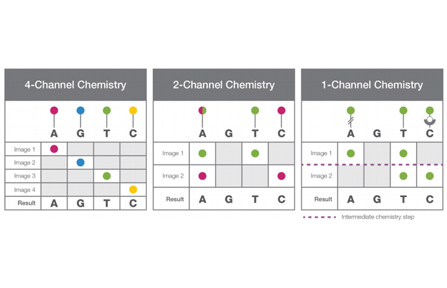

Base Calling & QC
1 Base Calling and Reads Quality Control
1.1 Fundamentals
Sanger Sequencing is the first game-changing sequencing method, it was developed in the 1970s (Sanger, Nicklen, and Coulson 1977) and was used to sequence the first human genome in 2001. Sanger sequencing is a chain termination method, it uses a mixture of dNTPs and ddNTPs to terminate the DNA synthesis at a random position (Sanger, Nicklen, and Coulson 1977).
As show on the figure above, Sanger sequencing will produce multiple fragments of DNA, each of which is a different length. The introduction of ddNTP will stop the DNA synthesis at a random position that match the base of the ddNTP. Later the fragments are separated by their length using gel electrophoresis. Reading each column in the gel will give the sequence of the DNA. The process is optimized with the use of fluorescent dyes that are incorporated into the DNA where only one reaction is enough the the sequence is interpreted based on the color.
1.2 Introduction to Second Generation Sequencing
The Second generation Sequencing (SGS) is a method of sequencing DNA. While Sanger sequencing is a chain termination method, SGS is a sequencing by synthesis method.
This process was further industrialized by the use of capillary electrophoresis to separate the fragments as known today as Sanger sequencing.
Second Generation Sequencing (SGS) is a method of sequencing DNA that was developed in the early 2000s. The principle is that during the DNA synthesis, at each base incorporation a attached dye is fluorescent when excited by a laser. However the dye is no longer fluorescent when the next base is incorporated. The sequence is then read by the laser as a series of fluorescent signals.
The signal read not on a single template but on a large number of templates simultaneously designated as cluster (polonies for polymerase colonies). The reason why SBS produce relatively short reads is linked with this clustering process. Indeed the polymerase activity is not linear and the signal is not uniform across the cluster. When some template are late it results in a mixing signal from the previous cycle to prevent ultimately the signal analysis.
This process was industrialized by companies such as Illumina where templates are deposited on a flowcell where a clustering process allow the forming of cluster for optimal signal acquisition.
So basically the sequencing process is based on Image Analysis. In addition to the base calling, the image analysis also allows to determine the quality of the sequencing. To this end both the cluster intensity and the signal-to-noise ratio are exploited to estimated a quality score. The quality score is a Phred score (log10 of the probability of error) and is reported for each base. As shown below the Quality score is a prediction made from the sequencing of known sequences.
It’s interesting to not that since, Illumina developed less expensive technology based on a double channel chemistry with only 2 dye for the 4 bases - and even a single channel chemistry. Nonetheless the methods might induce artefacts such as polyG tails at the end of reads due to the absence of base for short fragments.

REF: https://emea.illumina.com/science/technology/next-generation-sequencing/sequencing-technology/2-channel-sbs.html
1.2.1 Glossary for library description
Fragment: The DNA fragment that will be sequenced. Read: The sequence read from the Fragment. Library: Fragment enriched with its adapters/barcode after library preparation. Insert: The part of the fragment which is not sequenced
1.2.2 Common Issues in sequencing depending on library size
Depending on library size then can be different issues: 1. In case of too short fragments, the reads can overlaps (if paired) 2. In shorted gain, the reads can be contaminated by the adapter 3. If shorter than the read length, there will be no signal and it might be problematic for 2 color chemistry and induce polyG tail artifacts.
1.2.3 DNA Library Preparation in SGS
The DNA library preparation is a critical step. Important criteria are:
- The fragmentation method
- The fragment size (higher the better)
- The Amplification method (Amplification-free is better)
1.3 Third generation sequencing
The third generation of sequencing focuses on both long read sequencing and direct DNA sequencing (without prior library preparation, for Epigenetics not covered here) (van Dijk et al. 2018).
Nowdays there are 2 leading provider for long read sequencing (Lang et al. 2020):
PacBio (Pacific Biosciences) TGS Sequencing:
- Uses Single Molecule Real-Time (SMRT) technology
- DNA synthesis detected by fluorescent labels in real time
- Generates long, high-accuracy reads (>10 kb, especially with HiFi mode)
- Well-suited for full-length transcript sequencing, genome assembly, and detecting structural variants
Oxford Nanopore TGS Sequencing:
- DNA passes through a protein nanopore, changing electrical current
- Measures current changes to directly read DNA sequence in real time
- Can produce ultra-long reads (some over 100 kb)
- Portable devices (e.g., MinION) and rapid results useful for fieldwork, genome assembly, and epigenetic studies
Of note there are also other technologies to obtain long reads such as True Synthetic Long Reads (TSLR), not covered here.
1.3.1 Nanopore Base Calling
Nanopore base calling is fundamentally different from other sequencing technologies as it directly reads DNA sequences through changes in electrical current as nucleotides pass through protein nanopores. The base calling accuracy has improved significantly with advances in both hardware and computational algorithms. Various base calling tools have been developed and benchmarked to optimize accuracy and speed (Wick, Judd, and Holt 2018), with newer neural network-based approaches showing substantial improvements over earlier methods.
1.4 Current sequencing errors type and rate per sequencing techno
Different sequencing technologies exhibit distinct error profiles and biases (Ross et al. 2013):
Illumina (Second Generation):
- Substitution errors are most common (~0.1-1% error rate)
- GC bias affects coverage uniformity
- Quality degrades toward the end of reads
- Context-specific errors in homopolymers
PacBio (Third Generation):
- Higher overall error rate (10-15%) but randomly distributed
- Mainly insertion and deletion errors
- Minimal GC bias compared to short-read technologies
- HiFi mode significantly improves accuracy
Oxford Nanopore (Third Generation):
- Variable error rates (5-15%) depending on base calling algorithms (Wick, Judd, and Holt 2018)
- Primarily indel errors, especially in homopolymer regions
- Systematic errors can be reduced with improved base calling
Understanding these error profiles is crucial for downstream analysis and quality control.
1.5 How to get DNA for sequencing
1.5.1 Sample Selection
Prior sequencing it’s best to select an individual which is representative. In case of a species with different chromosomes copy number depending on sex, the sex with the most chromosome shall be prioritized (E.g. female for human). The best would be to sequence both.
Also it’s important to select the right tissue considering: - The potential somatic mutations - The concentration of DNA after extraction and purification - With a known ploidy, the smaller the better
It might be useful to study the karyotype of the species to select the right tissue.
1.5.2 DNA Extraction
The DNA extraction is a critical step. It’s important to use a protocol that is well adapted to the species and the tissue. The DNA should be of high quality and quantity. The DNA should be free of contaminants and degraded DNA.
1.6 QCs
To see how QC is done, look at the QC hands on pratice.